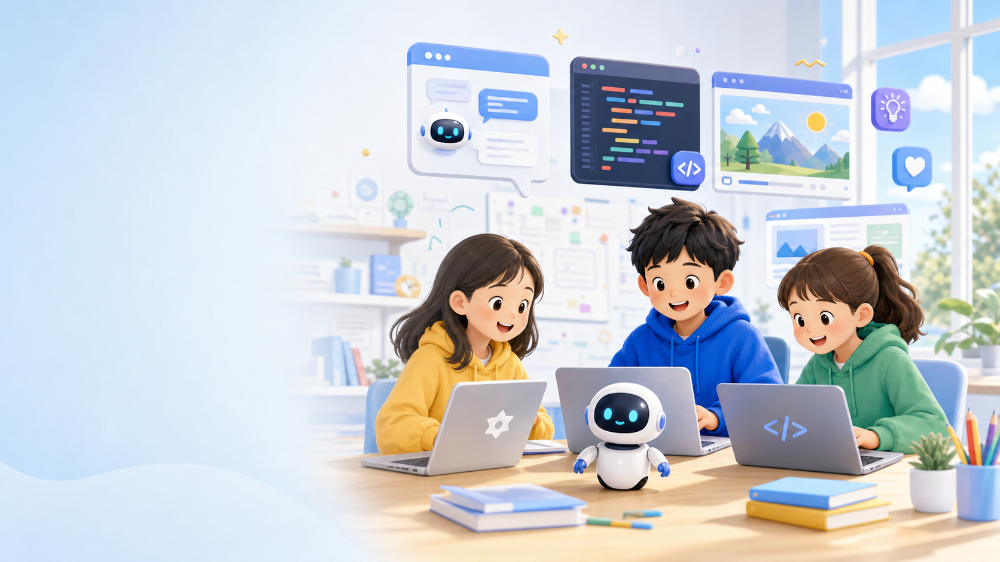
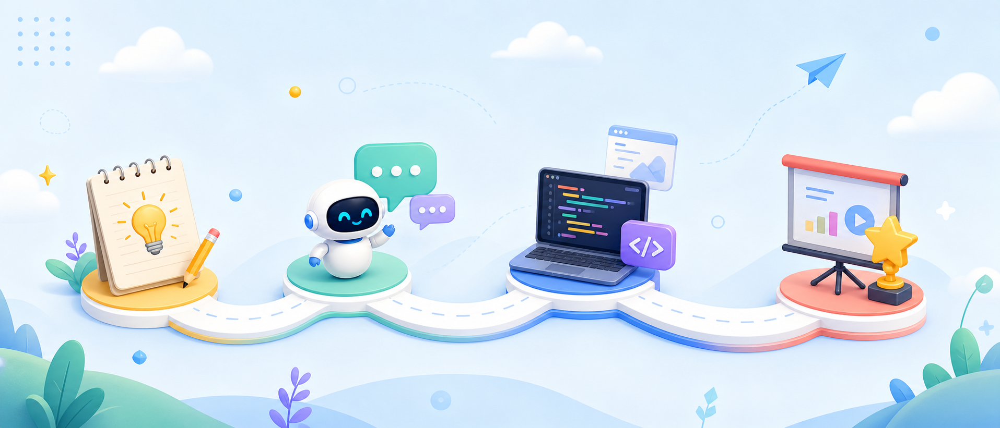

带孩子学习 AI 工具、网页制作、创意编程和项目展示，让技术学习最终落到一个看得见的作品上。
AI Coding for Young Creators
让孩子用 AI
创造自己的想法
我是 Ethan，在新西兰教授 AI 与编程相关课程，帮助不同年龄段的孩子通过真实项目学习创造、表达和解决问题。

About Ethan
一个关注作品、思维和表达的 AI 编程老师
孩子不只是使用 AI，更应该学会提出问题、组织想法、判断结果，并把想法一步步做出来。
逻辑思维、创造力、表达能力和解决问题能力，比记住某个工具按钮更重要。
Learning Journey
从想法到作品的学习路径
用一个清晰的创造流程，把 AI 编程变成孩子可以理解、可以复盘、可以展示的过程。

从生活问题或兴趣出发，明确想要解决的问题或想要创作的作品。
借助 AI 工具进行头脑风暴、资料查询和方案优化。
学习网页结构、代码逻辑和界面设计，把想法变成可运行项目。
展示作品、分享思路，复盘优化，并建立继续创作的信心。
What Kids Learn
学习主题
围绕真实项目，培养孩子的创造力、编程能力与解决问题的思维。
AI 工具入门
了解并使用生成式 AI 工具，提升学习效率与创作能力。
Vibe Coding
用自然语言与 AI 协作，把想法快速变成网页和小项目。
网页设计
学习网页结构与样式，制作属于自己的个人网站项目。
创意项目
结合兴趣与创意，完成故事、工具或互动作品。
逻辑思维
通过编程任务与挑战，训练分析与解决问题的能力。
项目展示
准备展示与作品集，自信表达、收获反馈与成长。
理解本地教育环境与学生需求
从小学到高中都能找到合适挑战
关注每个孩子的节奏与成长
在热爱中学习，在创造中自信
Student Portfolio
学生作品档案馆
按班次、学生和作品类型记录孩子们的创造过程。下面是示例内容，后续可以替换为真实作品。
Project Materials
作品素材
展示课程和项目中所需要用到的各类素材图片。可供随时参考与预览。
Contact
联系 Ethan
代码与算法交织的教学笔记，连同孩子们天马行空的AI作品，构成了这片小小的数字天地。倘若这些内容触动了你，或引发了你的某些共鸣，请通过邮箱告诉我。远方的回响，总是令人倍感珍惜。